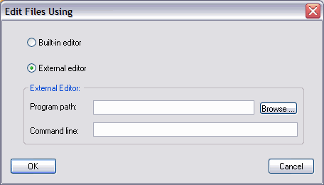

The default setting is to use the Code Co-op built-in editor when opening files from inside Code Co-op. To call a different editor, use this dialog box, browse to the installation path of your etitor and make your selection. Note, the advantage of the built-in editor is that it's integrated with Code Co-op (you can check files out from inside it).
